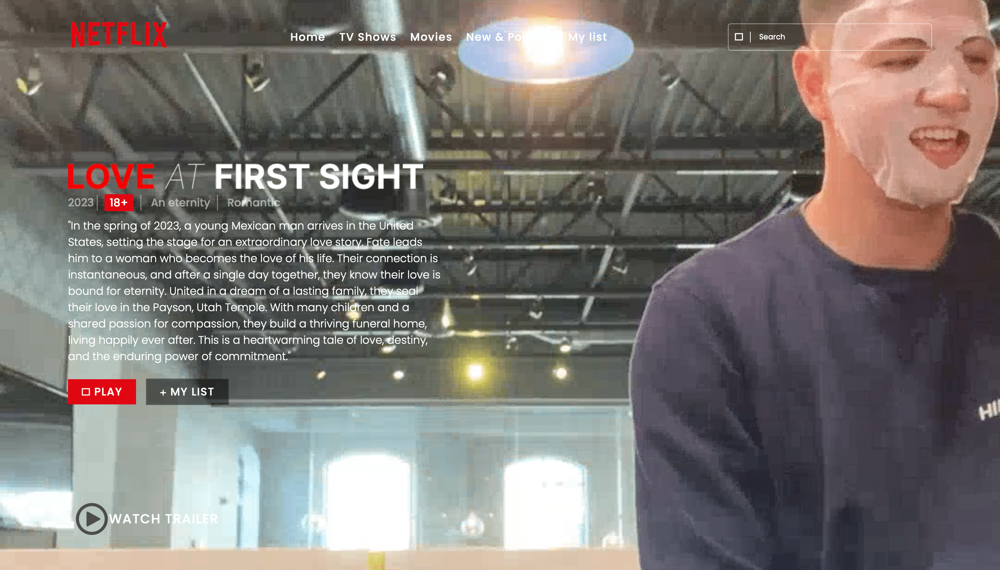

Latest Project



My Experience, I Programmed personalized apps and webpages for over 20 businesses ensuring quality content, design, and service. Headed the training and implementation of software among 7 employees pertaining to team. Taught each of 20 business owners how to integrate software programs into business processes and adjust business models accordingly. Provided 24 hour a day attention to customers to answer questions pertaining to software and gave prompt support to resolve any bugs. Led implementation efforts of 4 employee-team checking in weekly according to systemic updates.
Download CVMy interest in programming began a few years ago when I took an intensive course in full-stack developing. Upon my completion of the course, I started my first job as a developer at the company Afore-Coppel where I was able to gain many coding skills from real-world experiences. One of my biggest aspirations is to work for a company like Microsoft or Google - leaders of technological innovation. Following this dream, I decided to move to the United States where I began working for a local startup that enables small to medium sized businesses to systemize their processes. Willing to relocate: Anywhere
Read More